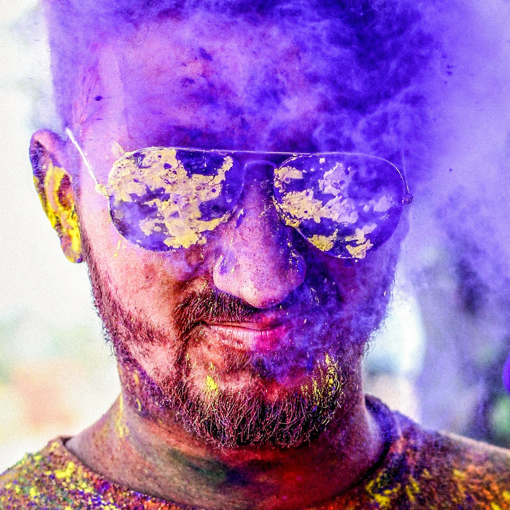

5 méthodes de traitement efficaces contre les pellicules de barbe : dites adieu à la peau squameuse !

Les pellicules de barbe peuvent être un problème embarrassant et inconfortable, mais la bonne nouvelle est qu'elles peuvent être traitées. Dans cet article, nous explorerons 5 méthodes de traitement efficaces pour vous aider à vous débarrasser des pellicules de barbe et à obtenir une barbe saine et sans pellicules.
Première méthode : gardez votre barbe propre et hydratée
- Utilisez un shampooing et un revitalisant doux pour barbe : choisissez un shampooing et un revitalisant doux spécialement conçus pour la barbe. Évitez les ingrédients agressifs qui peuvent assécher votre peau et aggraver les pellicules de barbe.
- Appliquez de l'huile ou du baume à barbe : l'huile et le baume à barbe peuvent aider à hydrater votre peau et à prévenir le dessèchement, qui est une cause fréquente de pellicules de barbe. Recherchez des produits qui contiennent des ingrédients naturels comme l'huile de jojoba, l'huile d'argan et le beurre de karité. L'Huile Mastel contient énormément d'huile de Jojoba et en plus elle est anti-pelliculaire !
Seconde méthode : exfoliez votre peau
- Utilisez un gommage doux : l'exfoliation de votre peau peut aider à éliminer les cellules mortes de la peau et à prévenir l'obstruction des pores, ce qui peut aggraver les pellicules de la barbe. Utilisez un gommage doux conçu pour les peaux sensibles et évitez de trop exfolier, ce qui peut provoquer des irritations et dessèchement. Pour exfolier efficacement selon votre type de peau, vous avez le choix des AHA (des acides exfoliants).
- Brossez votre barbe : le brossage régulier de votre barbe peut aider à répartir les huiles naturelles dans vos cheveux et à prévenir le dessèchement. Utilisez une brosse à poils doux et soyez doux pour éviter de provoquer des irritations.
Troisième méthode : utilisez des produits antifongiques
- Utilisez un nettoyant antifongique pour la barbe : si les pellicules de votre barbe sont causées par une infection fongique, un nettoyant antifongique pour la barbe peut être une méthode de traitement efficace. Recherchez un lavage qui contient du kétoconazole, qui est un puissant ingrédient antifongique.
- Appliquez une crème ou une lotion antifongique : dans les cas plus graves, votre dermatologue peut recommander une crème ou une lotion antifongique pour aider à éliminer l'infection. Ces produits peuvent aider à réduire l'inflammation et l'irritation tout en traitant la cause sous-jacente des pellicules de votre barbe.
Quatrième méthode : essayez des remèdes maison
- Appliquez du vinaigre de cidre de pomme : Le vinaigre de cidre de pomme a des propriétés antifongiques et antibactériennes qui peuvent aider à réduire l'inflammation et à éliminer les levures et les bactéries sur la peau. Diluez le vinaigre de cidre de pomme avec de l'eau et appliquez-le sur votre barbe à l'aide d'une boule de coton.
- Utilisez l'huile d'arbre à thé : l'huile d'arbre à thé est un agent antifongique et antibactérien naturel qui peut aider à apaiser la peau irritée et à réduire l'inflammation. Mélangez quelques gouttes d'huile d'arbre à thé avec une huile de support comme l'huile de noix de coco ou de jojoba, et appliquez-la sur votre barbe à l'aide d'une boule de coton.
- Ces traitements peuvent manquer d'efficacité, on vous conseille donc d'utiliser l'Huile antipelliculaire et nettoyante de barbe de la Collection Ginkgo Sacré disponible sur le site mastelcosmetics.com.
Dernière méthode : allez voir un dermatologue
Un rendez-vous chez un dermatologue peut vraiment aider votre peau. Il/elle vous conseillera des produits qui sont bon pour votre peau.
Pour conclure, avec les bonnes méthodes de traitement, vous pouvez traiter efficacement les pellicules de barbe et profiter d'une barbe saine et sans pellicules. Expérimentez différentes méthodes pour trouver celle qui vous convient le mieux et n'hésitez pas à consulter un dermatologue si votre état persiste.